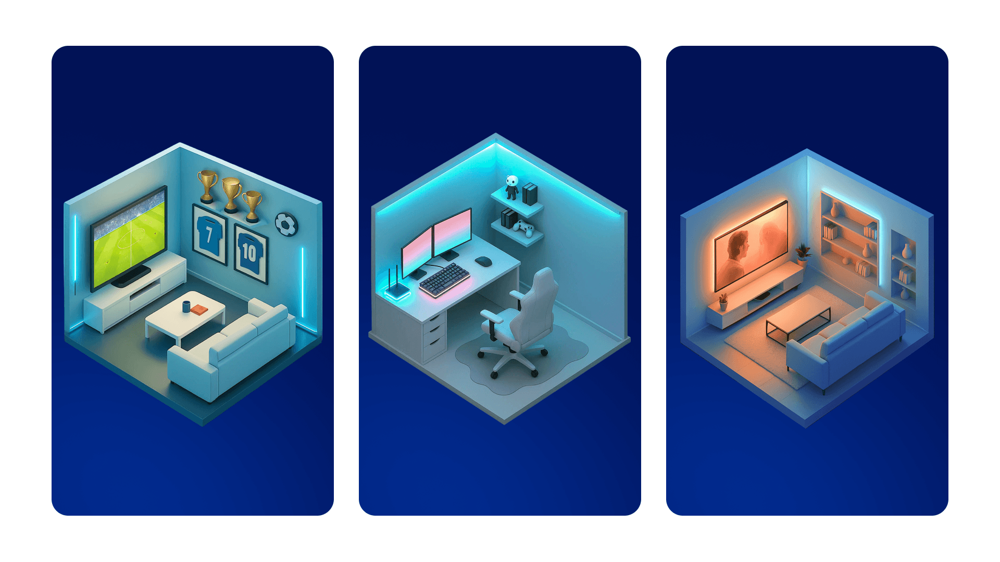
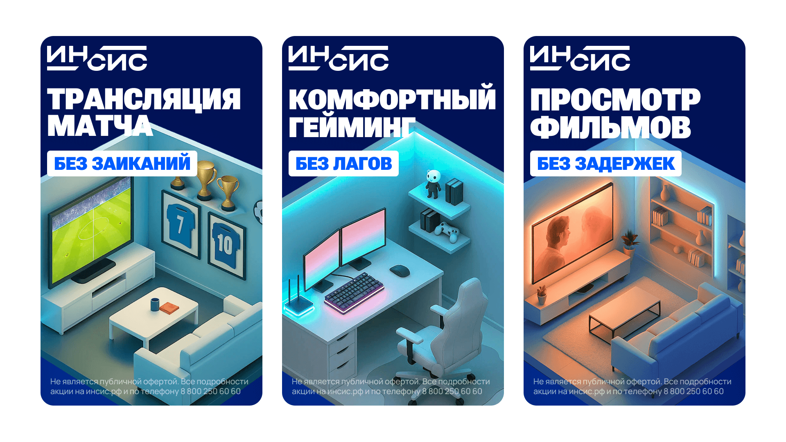
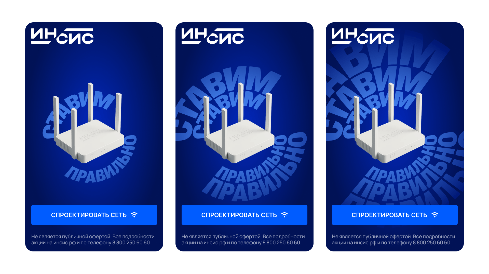

О проекте
В рамках креативной рекламной компании ИНСИС обратился к нам за созданием баннеров для размещения в диджитал-среде.
Задача
Разработать креативную диджитал-компанию для повышения узнаваемости бренда. Акцент нужно сделать на том, что компания специализируется на правильной установке роутера в квартире. Продуктом задачи будут интернет-баннеры с анимацией, которые компания будет использовать в каналах реализации.
Концепция
Путем долгого ресерча и просмотра референсов, мне пришла идея — показывать планировки квартир в изометрии, чтобы показать куда именно нужно ставить роутер, чтобы наслаждаться трансляциями, играми и фильмами без задержек. В итоге получилось три изображения, которые отражают наиболее частотные сценарии использования продукта. Все изображения были сгенерированы в Chat GPT.

Далее мы добавили лайны и получили первую часть раскадровки.

Важно было показать сам роутер, так как сами планировки вообще ни о чем не говорят. Мне пришла идея показать название креативной кампании в виде волн роутера. Клиенту идея понравилась и так мы получили вторую, заключающую часть раскадровки.

Итог
В итоге клиент успешно запустил креативную компанию в крупных телеграм-каналах СМИ Екатеринбурга. А еще наша анимация красовалась в центре Екатеринбурга на большом цифровом экране.

Следующий кейс